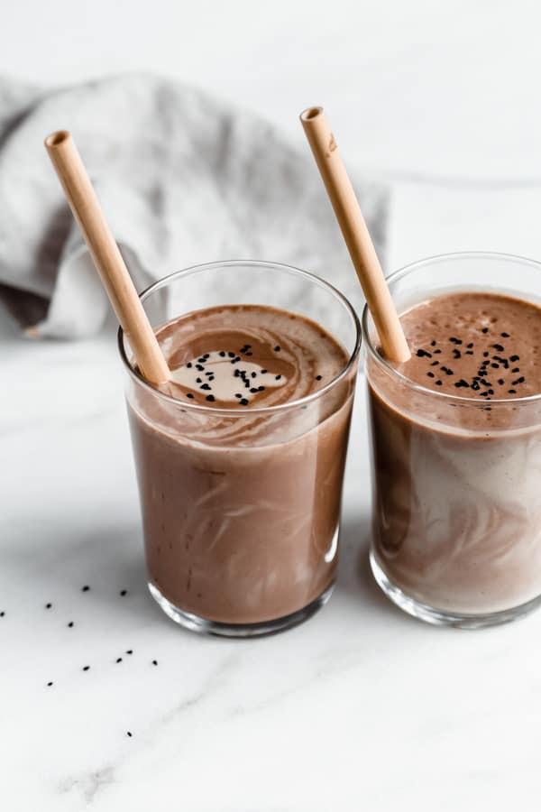

Shake Recipe
Home Page
Burger
Fries
Shake

Description
Sweet chocolate shake. Not your ordinary fungible
shake. This one of a kind non-fungible chocolate shake
is said to have been blessed by Vitalik Buterin himself.
Almost as sweet as the feeling when you buy an NFT
below floor price.
Ingredients
-
Chocolate Ice cream
-
Milk
-
Banana
-
Ground Cinnamon
Steps
-
Put 2 scoops chocolate ice cream in blender
-
put banana and a cup of milk in blender
-
Blend 1 minute
-
Pour into cup and top with ground cinnamon
-
Serve